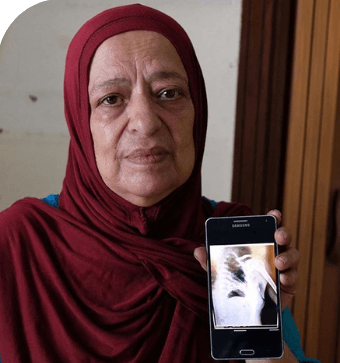
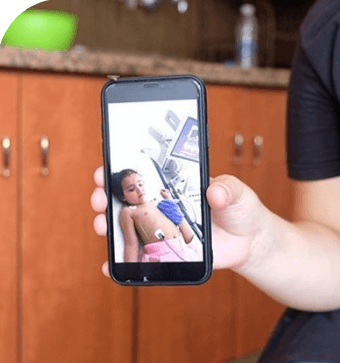
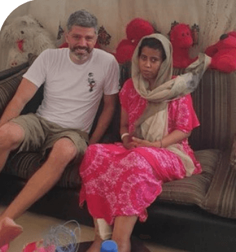

قصصهم
وترد أدناه قصص الناجين وتفاصيل الاتصال الخاصة بهم حتى تتمكن من مساعدتهم مباشرة.

الأطباء قالوا أنه لا يوجد أمل
كان الانفجار قد ألحق الضرر بمنزلنا والإصابات التي أصيب بها ابني خلقت تعقيدات مع...

قصة ليا وعبير
قضايا مثل تسرب حاد خلقت مكاناً ساماً جداً وخطيراً لعبير وليا للعيش في...

إنهم هنا معي، على قيد الحياة
فجأة، وقع الانفجار وركضت على الفور إلى عائلتي، فقط للعثور على الغبار والدخان...

Eleni – قصة الناجية معجزة
لقد سرق انفجار بيروت من كل شيء. لقد أصيبت بصدمة كبيرة في الرأس وإصابة في الساق...